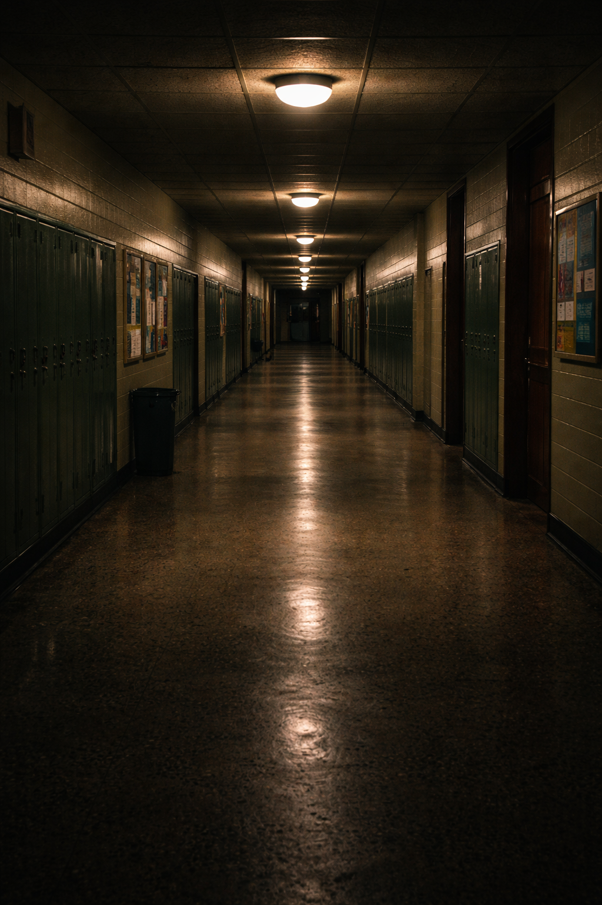

Du hast dich für die richtige Tür entschieden.

Du bist nun im Gang angekommen. Du hast jetzt zwei Möglichkeiten weiterzugehen und musst dich dafür zwischen zwei möglichen Türen entscheiden. Die eine Tür führt in den Turnsaal und die andere in die Bibliothek der Schule.
„Knall!“ Die Tür fällt fest hinter dir ins Schloss. „Ich hatte die Tür doch gar nicht berührt,“ wunderst du dich. Langsam macht sich Verwunderung und vor allem Verzweiflung in dir breit.
Du befindest dich im schwach beleuchteten Hauptgang deiner Schule. Du bist allein. Hinter dir ist die Tür durch die du hineingekommen bist fest verschlossen. Vor dir liegt ein Gang mit vielen Türen. Nach ausprobieren stellst du fest, dass du nur bei zwei Türen die Klinken hinunterdrücken kannst.
Was möchtest du tun?